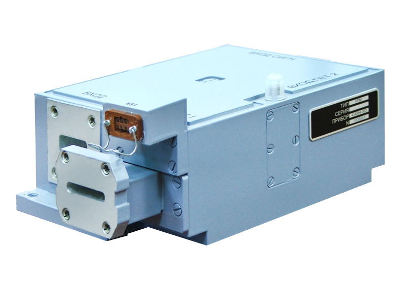
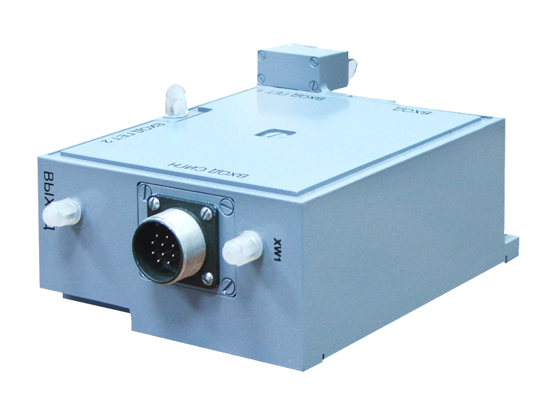

434854.003
Designed for use in receiving blocks of modern weather-navigation radars and provides:
The radar receiving module has an input attenuator for adjusting the level of the input signal and protecting the low-noise amplifier for the time of the probe pulse, with a short recovery time.
 
| operating frequency range | X |
| gain factor (adjustable), dB | 46 |
| noise figure, dB | 3.5 |
| the upper limit of the linearity of the amplitude characteristic, dBm | -35 |
| coefficient of standing wave on the input | 1.6 |
| selectivity through the mirror reception channels, dB | 40 |
| bandwidth fph2 = 28 MHz at -3 dB, MHz | 5 |
| depth of manual adjustment of the transmission factor, dB | 25 |